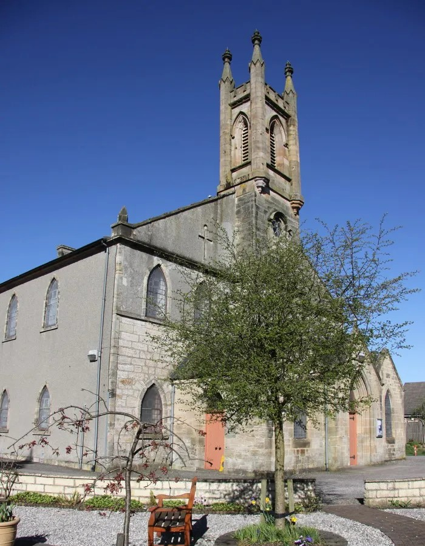
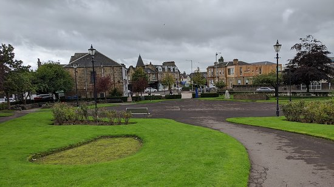
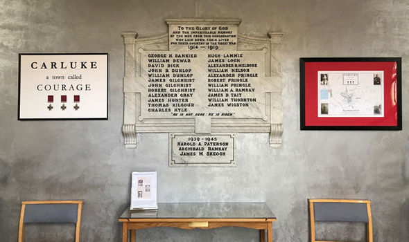

Many aspects of Carluke to this day still remain a mystery, one of those things being the origin of the name 'Carluke'.
What we do know however, is that the first settlers here were a group of monks. These monks were Tironesian monks from Kelso Abbey residing in a church in the forest of Mauldside in the 12th Century.

The church they erected can be found today in the center of the current old churchyard in Carluke!
The church sadly is not a place we can still visit to this day, however, the belltower still stands there.
The old church was replaced with the current "St. Andrews Church"

In the past, Carluke was predominately a mining town (known for being a town with multiple mineshafts) but before this (whilst the town was still slowly growing in population) it was known for weaving.
The market within the heart of the town is the market gardens. These back in the day were the host place of cattle fairs which took place four times a year. Now it is the meeting place of the gala day and the ham and jam festival.

The War Memorial for all the fallen soilders from both WW1 and WW2. Many people fought for our country from Carluke, and it's something we
have always been extremely proud of.
R.W. Scott has successfully been in Carluke providing those across the nation with:
- various different forms of icing
- berry jams and marmalade
- sweet sauces
- and a few other high quality products!